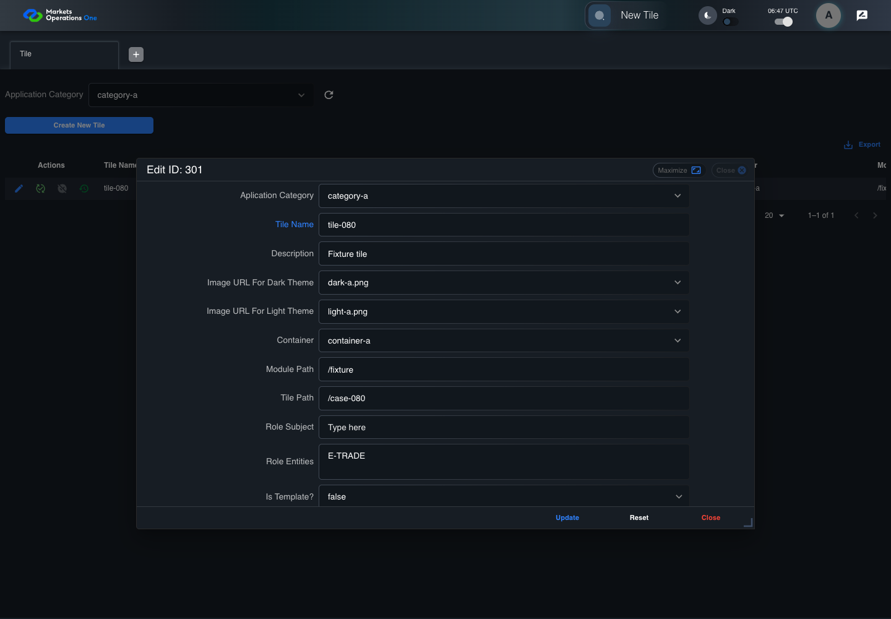
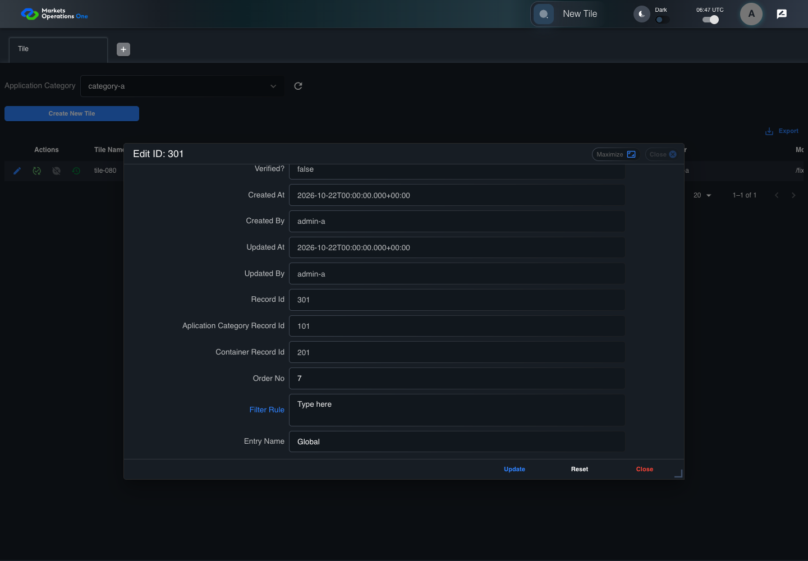

BFF-ADM-080 current BFF administration through actual UI
PASS · application/run-072/bff-adm-080-current-bff-administration-through-actual-ui-49069612b3dd-attempt-1 · ACTUAL_APPLICATION_LOCAL_SERVICES
Actual current React and exact-current BFF admin controllers/services/JPA with actual migration DDL in disposable PostgreSQL. Controlled OUD/EMS2 identities and local Spring bootstrap. Fixture SQL seeds/mutates isolated records; service errors are actual database errors. Undefined agreed messages remain unresolved acceptance.
2026-10-22T06:47:42.780Z to 2026-10-22T06:47:51.686Z
Assertions and result · Artifact manifest · Exact run inputs and source hashes
Result SHA-256:1a2ae321200cf7d211585694e8c24c96f6de1dca709da85667787c2477415ef7Machine observations
- actual-identity-projection.json
938b4245d8e58ce290147c5473fcf6a8e5d40398c73a92b262a67b677fca32d4 - baseline-inputs.json
86cf4cde1072c0927c9f271dd394ba42a0af8d950eaa1f3a754ee6f7bc5b7057 - bff-boundary.json
e0381f99d73cc115d5f4428648d078a3a642d5eb8d4630d99a3319d66f0515be - committed-ui-submission-comparisons.json
0687e50c9259007c7e8c7e35d4189a3b5e2d4aa2b1649afb0cd92ad9b02b4fa7 - empty-filter-rule-representation.json
3ff130b44238f4dd7e07cd20107f4d9581330659df5649f65f3700a3b7ff8038 - fixture-step-10.json
8647d7ebd3705b6bcf5ead3201ed9054d43856a605414496c76dec1b2bb396c5 - fixture-step-11.json
708d16a1346e325ce7aad1a5854b5e4eb32dfca30e3c4f8c22741775c83e73a4 - fixture-step-12.json
4d0914a6dc1548aff5f8af1ebf19370182e12416204c5bc537f8118a217fdf32 - fixture-step-6.json
6e95853483275497b2e1ec2c528d7a8a1ca33d5b9256f6efdc7522ff7532875e - fixture-step-7.json
6a269cc756c09a931eb96b89305c04aaf3e828b4779be3503c4fe27560f4a4b5 - fixture-step-8.json
ceb0f070a0f4835dce1a1e4e4e33777edfbdc71f5c5e215168531449b1a51c5c - fixture-step-9.json
b483c9160ce442738d0bb4a92c270489a35509e86b752cdcbf27c7633d71b62b - initial-persisted-records.json
5c9bf2d707d2e77082c867ba7bd964ec7631da0c94035a64168c305e92f9ba80 - persisted-after-submit.json
3960c30439963aec02df300246939415bc4cfb776b911b6db4abbe9dca9dc484 - reference-snapshot-3.json
0ffd573b6e942fb567f5f30f6a62f815da952e420b75707b859379876e23f58c - reference-snapshot-4.json
2161807d0000a5ce15465047e50586cba2f8d8af74ad8ba188dcc343af4e8fff - rejection-or-policy-observation.json
c540f0f4ceac909f069b239e172fbb8d6da25e87df67866211726e35c45f1f5d - ui-origin-bff-requests.json
8246f90c5aee8fafb59e86a29034ebf03a9dba2765d47d2099a909b40918c9e5 - undefined-message-contract.json
6a038f47ccdf90c6d85766c668a371fd00054e12238d9f822ffa2b22bf9e1c34
Screenshot capture: CAPTURED. Named frames: 24.
Step screenshot bindings: COMPLETE. 23/23 canonical steps have execution screenshots.
Bindings measure structural coverage only. They do not establish screenshot content quality or relevance.
Screenshot content review: NOT_REVIEWED. Recorded context: 0/24 frames. Identical image bytes: 0 repeated frames. Recorded context does not establish human visual review.
Canonical step timeline
Given Admin A uses subject "admin-a" with role "FMO_ADMIN" in an isolated authenticated browser
Execution: PASSED.1. step-01 Visible state after step 1: Given Admin A uses subject "admin-a" with role "FMO_ADMIN" in an isolated authenticated browser
2026-10-22T06:47:46.706Z · 1440×1000
Step: /Users/lushevol/code/github/ratan-release-impact/workbench/tasks/ui-test-coverage-20261022/test-cases.md:18087
SHA-256:830c148e8484d1b20e257628dd898f61a3451817636912953167049a48d97e7cAnd the controlled Tile fixture records the initial grid rows and persisted values
Execution: PASSED.2. step-02 Visible state after step 2: And the controlled Tile fixture records the initial grid rows and persisted values
2026-10-22T06:47:46.853Z · 1440×1000
Step: /Users/lushevol/code/github/ratan-release-impact/workbench/tasks/ui-test-coverage-20261022/test-cases.md:18088
SHA-256:0ce27e880887cd5747630d2d9fae0180725ad7ea31d16f5f489f08c64c8c42d5And Category 101 has label "category-a" and Import Map 201 has Module Name "container-a"
Execution: PASSED.3. step-03 Visible state after step 3: And Category 101 has label "category-a" and Import Map 201 has Module Name "container-a"
2026-10-22T06:47:46.904Z · 1440×1000
Step: /Users/lushevol/code/github/ratan-release-impact/workbench/tasks/ui-test-coverage-20261022/test-cases.md:18089
SHA-256:7ae529ec5c911d6863039724b87da72592cf03df0d5b7b8049fef4818cb02026And both references belong to "FMO_ADMIN" and the Tile page category filter value is Category 101
Execution: PASSED.4. step-04 Visible state after step 4: And both references belong to "FMO_ADMIN" and the Tile page category filter value is Category 101
2026-10-22T06:47:46.970Z · 1440×1000
Step: /Users/lushevol/code/github/ratan-release-impact/workbench/tasks/ui-test-coverage-20261022/test-cases.md:18090
SHA-256:98ef7bc566ea1c2b641e32ad0510f72aafa7a6f135035acc97af687bf6e1778eAnd the Tile grid has record "301" owned by "FMO_ADMIN"
Execution: PASSED.5. step-05 Visible state after step 5: And the Tile grid has record "301" owned by "FMO_ADMIN"
2026-10-22T06:47:47.037Z · 1440×1000
Step: /Users/lushevol/code/github/ratan-release-impact/workbench/tasks/ui-test-coverage-20261022/test-cases.md:18091
SHA-256:f129dd13ccd15b869e5e0f9f589df248cad20c150f1ae4417fbbe1b1a2dc4cc8And the baseline fixture data defines "Tile Name" as "tile-080"
Execution: PASSED.6. step-06 Visible state after step 6: And the baseline fixture data defines "Tile Name" as "tile-080"
2026-10-22T06:47:47.104Z · 1440×1000
Step: /Users/lushevol/code/github/ratan-release-impact/workbench/tasks/ui-test-coverage-20261022/test-cases.md:18092
SHA-256:f29c119318a64a0f5c8909b286edaea5e231f666256ce886a6cabbc00b198b35And the baseline fixture data defines "Module Path" as "/fixture"
Execution: PASSED.7. step-07 Visible state after step 7: And the baseline fixture data defines "Module Path" as "/fixture"
2026-10-22T06:47:47.171Z · 1440×1000
Step: /Users/lushevol/code/github/ratan-release-impact/workbench/tasks/ui-test-coverage-20261022/test-cases.md:18093
SHA-256:e33c0112bf0611264f7ef69ae14ca3367130b9d0c337135b69e5c02491c51547And the baseline fixture data defines "Tile Path" as "/case-080"
Execution: PASSED.8. step-08 Visible state after step 8: And the baseline fixture data defines "Tile Path" as "/case-080"
2026-10-22T06:47:47.236Z · 1440×1000
Step: /Users/lushevol/code/github/ratan-release-impact/workbench/tasks/ui-test-coverage-20261022/test-cases.md:18094
SHA-256:7148ead1c5a7fb09abc5e19dd4bee9acbe3b44007834516d9793f70ebffe568bAnd the baseline fixture data defines "Role Entities" as "E-TRADE"
Execution: PASSED.9. step-09 Visible state after step 9: And the baseline fixture data defines "Role Entities" as "E-TRADE"
2026-10-22T06:47:47.306Z · 1440×1000
Step: /Users/lushevol/code/github/ratan-release-impact/workbench/tasks/ui-test-coverage-20261022/test-cases.md:18095
SHA-256:3f389be33b05c8a95331d0ea259c34b9f3f5c7dd50c861df79d382d1c024c313And the baseline fixture data defines "Filter Rule" as ""
Execution: PASSED.10. step-10 Visible state after step 10: And the baseline fixture data defines "Filter Rule" as ""
2026-10-22T06:47:47.374Z · 1440×1000
Step: /Users/lushevol/code/github/ratan-release-impact/workbench/tasks/ui-test-coverage-20261022/test-cases.md:18096
SHA-256:f827eaf50187de41ef427a7b6f87d37d29cc16a32d9c7d16680f676edd4c2230And the baseline Tile references use "Aplication Category" "category-a" and "Container" "container-a"
Execution: PASSED.11. step-11 Visible state after step 11: And the baseline Tile references use "Aplication Category" "category-a" and "Container" "container-a"
2026-10-22T06:47:47.440Z · 1440×1000
Step: /Users/lushevol/code/github/ratan-release-impact/workbench/tasks/ui-test-coverage-20261022/test-cases.md:18097
SHA-256:05aaa49ed4ffee736873cfa24e6d047c2d73fdcf07db2b9701cc788145e37c91And the installed request interceptor defines "importMap" as null on the next Tile update
Execution: PASSED.12. step-12 Visible state after step 12: And the installed request interceptor defines "importMap" as null on the next Tile update
2026-10-22T06:47:47.507Z · 1440×1000
Step: /Users/lushevol/code/github/ratan-release-impact/workbench/tasks/ui-test-coverage-20261022/test-cases.md:18098
SHA-256:e77fe736ea6f1b7b515c67dbcb43315a233415cb07f269a609cfbd3777037985When Admin A clicks the button labeled "Edit" in the Tile grid row with "Record Id" "301"
Execution: PASSED.13. step-13 Visible state after step 13: When Admin A clicks the button labeled "Edit" in the Tile grid row with "Record Id" "301"
2026-10-22T06:47:47.905Z · 1440×1000
Step: /Users/lushevol/code/github/ratan-release-impact/workbench/tasks/ui-test-coverage-20261022/test-cases.md:18099
SHA-256:a1063bc4bee39a2da7e17cf7e5f74896fb533b1542caa5518061de6165b36e95Then the dialog titled "edit ID: 301" is visible on the Tile administration page
Execution: PASSED.14. step-14 Visible state after step 14: Then the dialog titled "edit ID: 301" is visible on the Tile administration page
2026-10-22T06:47:47.989Z · 1440×1000
Step: /Users/lushevol/code/github/ratan-release-impact/workbench/tasks/ui-test-coverage-20261022/test-cases.md:18100
SHA-256:8bd7f67d2c296d400691a38acdf23f2300e94acfe7ea2eb3c46d53e72910c75fWhen Admin A fills the textbox labeled "Tile Name" with "tile-080" in dialog "edit ID: 301"
Execution: PASSED.
15. step-15 Visible state after step 15: When Admin A fills the textbox labeled "Tile Name" with "tile-080" in dialog "edit ID: 301"
2026-10-22T06:47:48.533Z · 1440×1000
Step: /Users/lushevol/code/github/ratan-release-impact/workbench/tasks/ui-test-coverage-20261022/test-cases.md:18101
SHA-256:952a9df23afeb9727b18bfdf9b56375e102c4abb1a0d13de240891b3d3de60ddAnd Admin A fills the textbox labeled "Module Path" with "/fixture" in dialog "edit ID: 301"
Execution: PASSED.16. step-16 Visible state after step 16: And Admin A fills the textbox labeled "Module Path" with "/fixture" in dialog "edit ID: 301"
2026-10-22T06:47:48.980Z · 1440×1000
Step: /Users/lushevol/code/github/ratan-release-impact/workbench/tasks/ui-test-coverage-20261022/test-cases.md:18102
SHA-256:50e9d51de03a9192f587a3d9d18806e9ba2cf6e9cba9ad42c88df28a07abec3eAnd Admin A fills the textbox labeled "Tile Path" with "/case-080" in dialog "edit ID: 301"
Execution: PASSED.17. step-17 Visible state after step 17: And Admin A fills the textbox labeled "Tile Path" with "/case-080" in dialog "edit ID: 301"
2026-10-22T06:47:49.427Z · 1440×1000
Step: /Users/lushevol/code/github/ratan-release-impact/workbench/tasks/ui-test-coverage-20261022/test-cases.md:18103
SHA-256:8da2f71f0ef4f5123a464d5f27bfaa7f9a0b6f3fdf3d4e92fdb953930c61e1b2And Admin A fills the textarea labeled "Role Entities" with "E-TRADE" in dialog "edit ID: 301"
Execution: PASSED.18. step-18 Visible state after step 18: And Admin A fills the textarea labeled "Role Entities" with "E-TRADE" in dialog "edit ID: 301"
2026-10-22T06:47:49.859Z · 1440×1000
Step: /Users/lushevol/code/github/ratan-release-impact/workbench/tasks/ui-test-coverage-20261022/test-cases.md:18104
SHA-256:f96aba0baeb3c45671f061e302e47e67a8b1ca2117bd051581a059b8391a2a63And Admin A fills the textarea labeled "Filter Rule" with "" in dialog "edit ID: 301"
Execution: PASSED.
19. step-19 Visible state after step 19: And Admin A fills the textarea labeled "Filter Rule" with "" in dialog "edit ID: 301"
2026-10-22T06:47:50.310Z · 1440×1000
Step: /Users/lushevol/code/github/ratan-release-impact/workbench/tasks/ui-test-coverage-20261022/test-cases.md:18105
SHA-256:0f8c63f9dcb556189e677e2a95c5c2266a44dffef9aa078f02ea8bfc807edf0cAnd Admin A clicks the button labeled "Update" in dialog "edit ID: 301"
Execution: PASSED.20. step-20 Visible state after step 20: And Admin A clicks the button labeled "Update" in dialog "edit ID: 301"
2026-10-22T06:47:50.620Z · 1440×1000
Step: /Users/lushevol/code/github/ratan-release-impact/workbench/tasks/ui-test-coverage-20261022/test-cases.md:18106
SHA-256:b875078ab9f30c226978334b1b3ae0f6c61ca40ec86f6e1acdc46ef14c5a49dcThen the dialog titled "edit ID: 301" remains visible on the Tile administration page
Execution: PASSED.21. step-21 Visible state after step 21: Then the dialog titled "edit ID: 301" remains visible on the Tile administration page
2026-10-22T06:47:50.732Z · 1440×1000
Step: /Users/lushevol/code/github/ratan-release-impact/workbench/tasks/ui-test-coverage-20261022/test-cases.md:18107
SHA-256:91887148340e464ddd1c2945089fe567e2a32d0d9d87e4ffd8b4f81e949c2305And the alert with severity "error" in the portal snackbar displays the agreed message for an Import Map required-field error
Execution: PASSED.22. step-22 Visible state after step 22: And the alert with severity "error" in the portal snackbar displays the agreed message for an Import Map required-field error
2026-10-22T06:47:50.834Z · 1440×1000
Step: /Users/lushevol/code/github/ratan-release-impact/workbench/tasks/ui-test-coverage-20261022/test-cases.md:18108
SHA-256:1a064763ff109a31ce8a42b45b92da200d2d52708e47604e1ad7228322b8b68dAnd the persisted Tile record equals its pre-submission snapshot
Execution: PASSED.23. step-23 Visible state after step 23: And the persisted Tile record equals its pre-submission snapshot
2026-10-22T06:47:50.912Z · 1440×1000
Step: /Users/lushevol/code/github/ratan-release-impact/workbench/tasks/ui-test-coverage-20261022/test-cases.md:18109
SHA-256:dc9a79958a5cee1feb622a7064fc731de8c59a5a0fb8ac8a0a6fd59f5773d628


Additional named frames

Screenshots establish visible state only. Assertions and traces support functional claims.